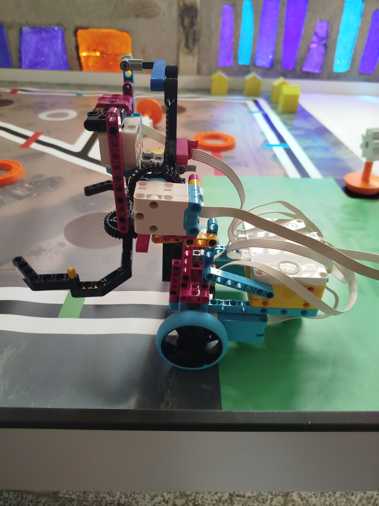
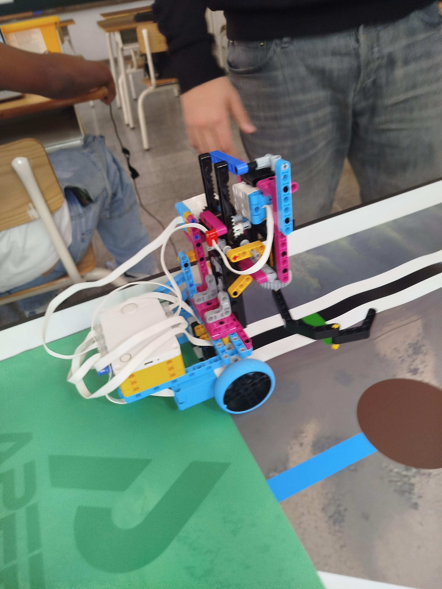
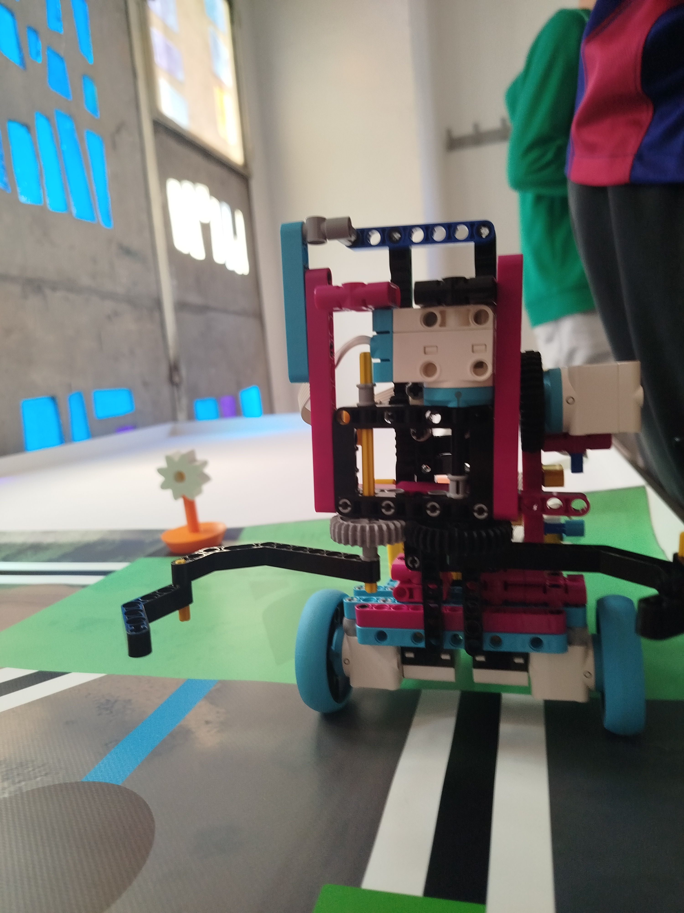
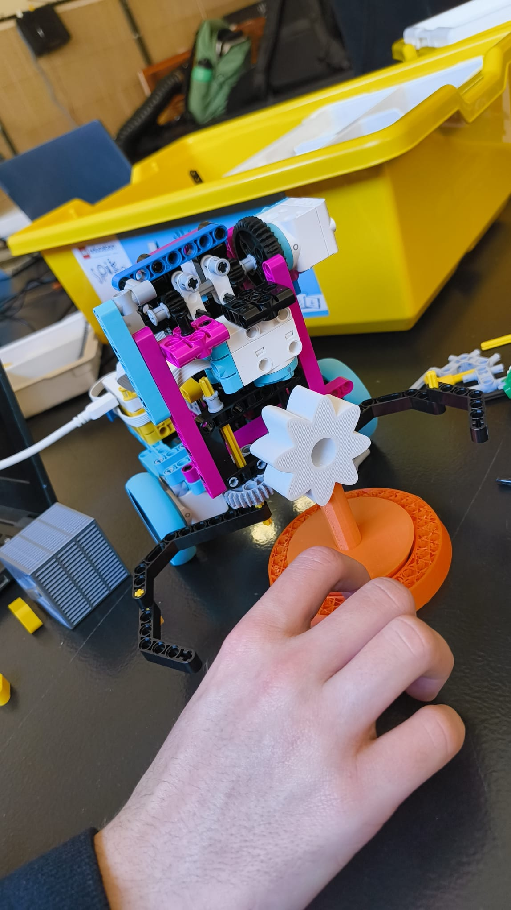

Galería del Proyecto





Integrantes del equipo
Estas son nuestras mentes pensantes super geniales:
![Foto de [Nombre]](../Aperticxs/Mateo.png)
Mateo Parrón
Diseñador de planos y constructor
![Foto de [Nombre]](../Aperticxs/Fran.jpeg)
Francisco Fras
Programador constructor
![Foto de [Nombre]](../Aperticxs/Erik.jpeg)
Erik Funes
Diseño y funcionalidad
![Foto de [Nombre]](../Aperticxs/Marc.png)
Marc Illera
Diseño y Estrategia
![Foto de [Nombre]](../Aperticxs/Arnau.png)
Arnau Viñals
Programación y mantenimiento
![Foto de [Nombre]](../Aperticxs/Eric.png)
Eric Vilarrubla
Programacion
![Foto de [Nombre]](../Aperticxs/Leonard.jpeg)
Leonard Waltrich
Diseño y Estrategia
> Sistema iniciado...